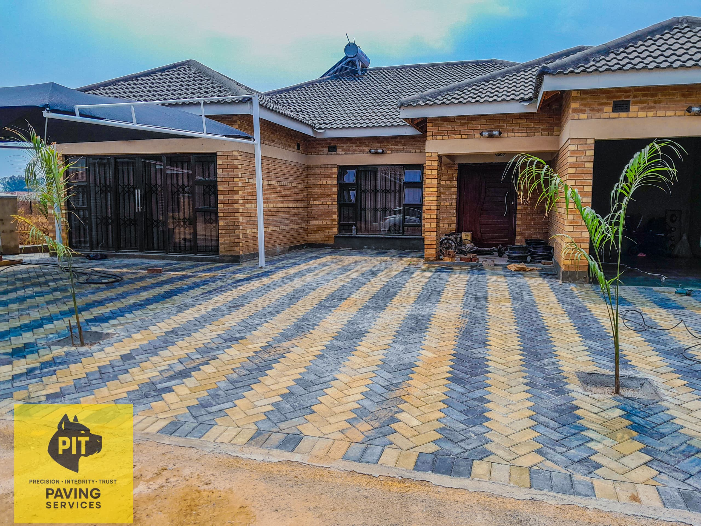
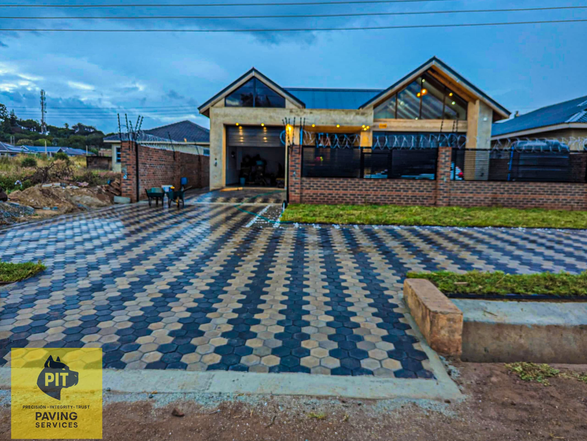
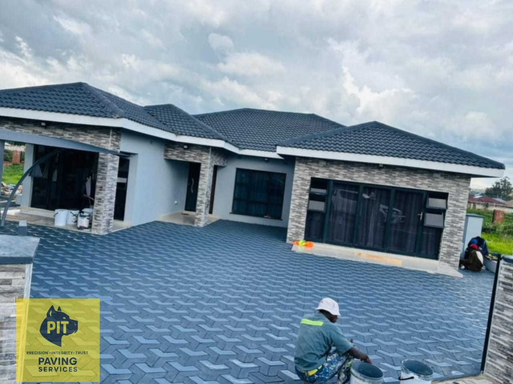
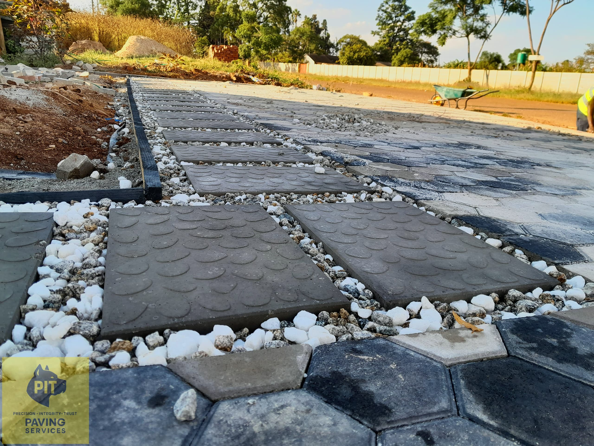
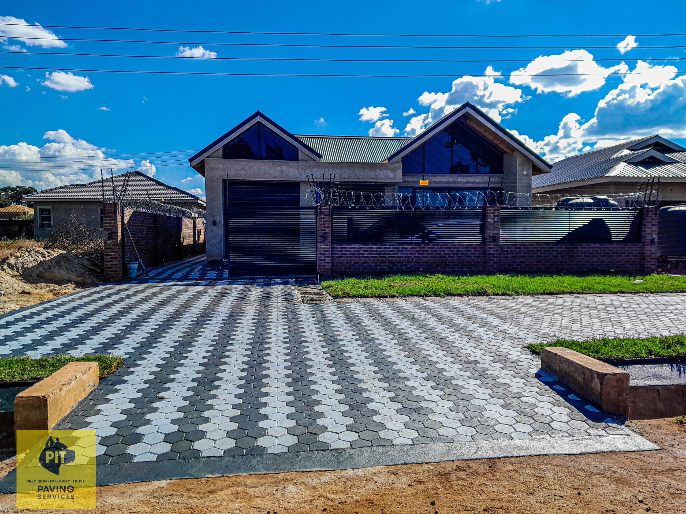
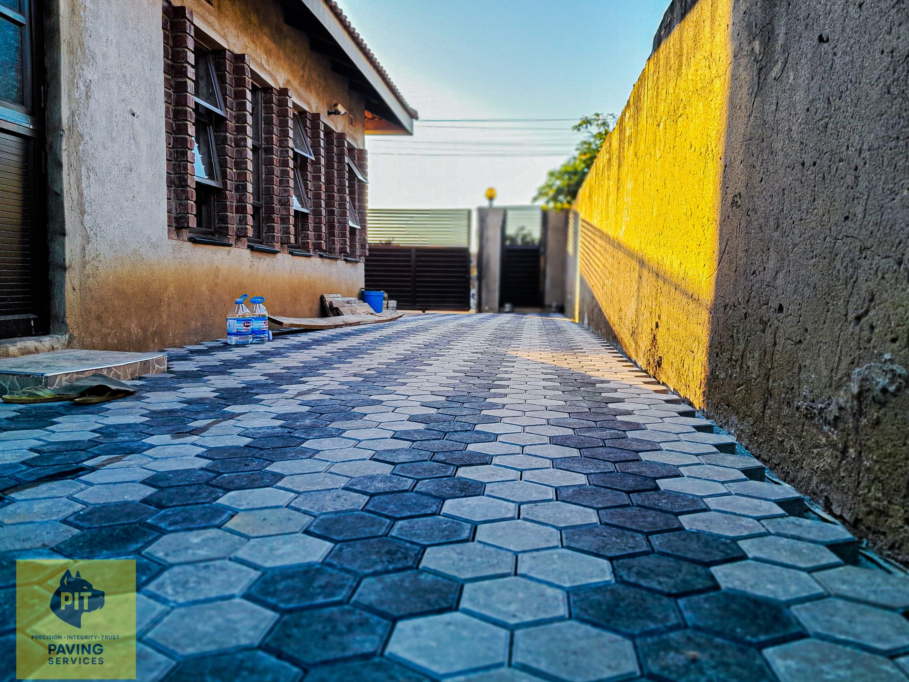
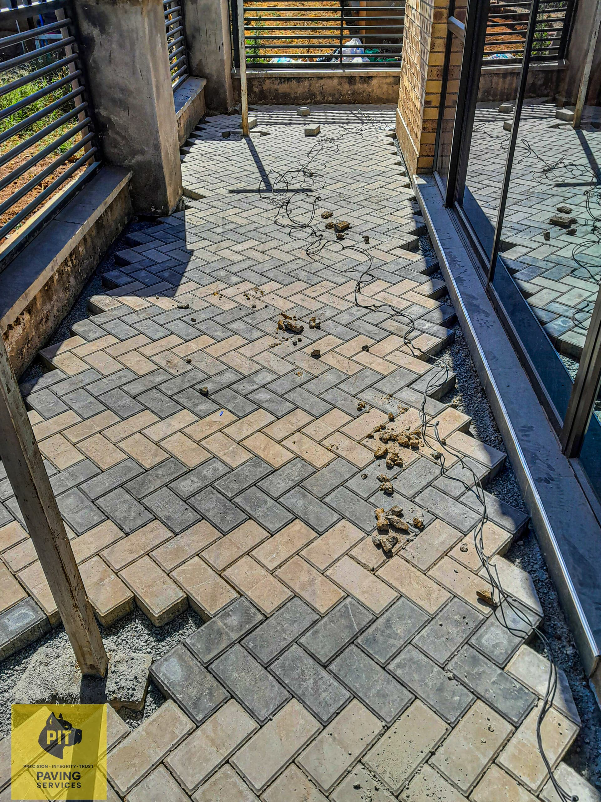
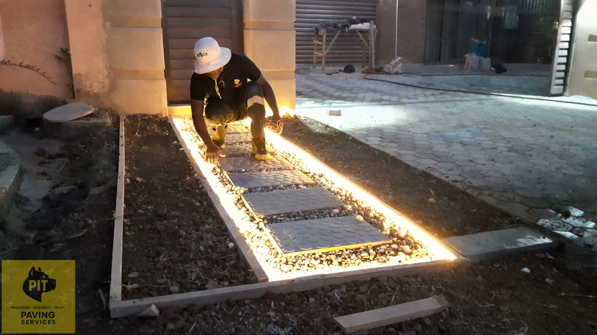

Patio Paving
Turn your outdoor space into a clean, usable area with Holland pavers laid with tidy lines and a premium finish.
Read MorePrecision · Integrity · Trust
Holland paving, paving bricks and concrete pavers for driveways, patios, pool surrounds, walkways, courtyards, parking areas and commercial properties.

About PIT Paving Services
If you're tired of dusty yards, muddy entrances, or paving that's started sinking in places, you're not alone. Most people just want one thing: a clean, solid surface that looks neat and stays neat — even after heavy rains, daily traffic, and years of use.
PIT Paving Services installs Holland paving, paving bricks, and concrete pavers for driveways, patios, pool surrounds, walkways, courtyards, parking areas, and commercial properties.
Our name says it all — Precision, Integrity and Trust guide every project we take on, from the ground preparation to the final clean finish.
We focus on the parts that actually make paving last: proper ground preparation, correct levels, and clean edging. Whether you're paving from scratch or fixing an area that's already been done before, we'll guide you with the best option for your space and budget — and we'll keep the finish clean and professional.
What We Do
From clean home driveways to large yards, access areas and high-traffic zones — we install paving that looks premium now and still looks good later.

Turn your outdoor space into a clean, usable area with Holland pavers laid with tidy lines and a premium finish.
Read More
Professional painting services for interiors and exteriors, with clean lines and a premium, long-lasting finish.
Read More
Front entrances, side passages, and garden paths paved neatly so you stop dealing with mud, dust, and uneven footing.
Read More
Neat, durable parking bays and access lanes with proper base prep so cars move in and out smoothly without dips and puddles.
Read More
Deep clean and seal Holland pavers to refresh the look, reduce stains, slow weeds, and make maintenance easier.
Read More
If your paving is sinking, uneven, or spreading at the edges, we lift, fix the base, re-level, and relay it neatly.
Read More
Professional light installation to brighten driveways, walkways, patios, and outdoor areas with a clean, premium finish.
Read MoreMore Of What We Do
Additional paving and installation services for homes and businesses across Zimbabwe.
Professional paving for offices, complexes, retail areas, and shared spaces — designed for both foot traffic and vehicles where needed.
Read MoreHeavy-duty Holland pavers for yards, loading areas, and high-traffic zones that need strength, stability, and long-term performance.
Read MoreStrong, neat Holland paving for driveways that handles daily parking, turning, and heavy use without looking rough.
Read MoreClean borders and strong edge restraint that makes paving look finished — and helps stop pavers from creeping over time.
Read MorePave open yard areas, washing areas, and courtyards to reduce dust and create a cleaner, more finished property.
Read MoreNeat, well-laid lawn installation to complement your paved areas and keep your outdoor space green and clean.
Read MoreWhy Choose Us
Paving looks simple until you start living with it. If the base isn't done properly, you'll see dips, loose pavers, and puddles forming — especially in driveways and parking areas where vehicles turn and stop every day.
That's why our work is built around the foundation first. We take ground preparation seriously, we set levels properly, and we finish with neat edging that helps lock everything in place for the long run.
We work on both residential and commercial paving, and we're just as comfortable doing a clean home driveway as we are doing larger yards, access areas, and high-traffic zones.
If you want paving that looks premium now and still looks good later, we're the team to call.
Get In Touch
Tell us what you want paved and where you're located in Zimbabwe — we'll come back with a clear quote and next steps.
Areas We Serve
PIT Paving Services serves clients across Zimbabwe, including Harare, Bulawayo, Mutare, Gweru, and other major towns. If you're nearby, there's a good chance we can assist — send your suburb and we'll confirm availability.
Contact UsWatch Us In Action
Watch PIT Paving Services at work — videos play automatically, one after another.
Video 1 of 4